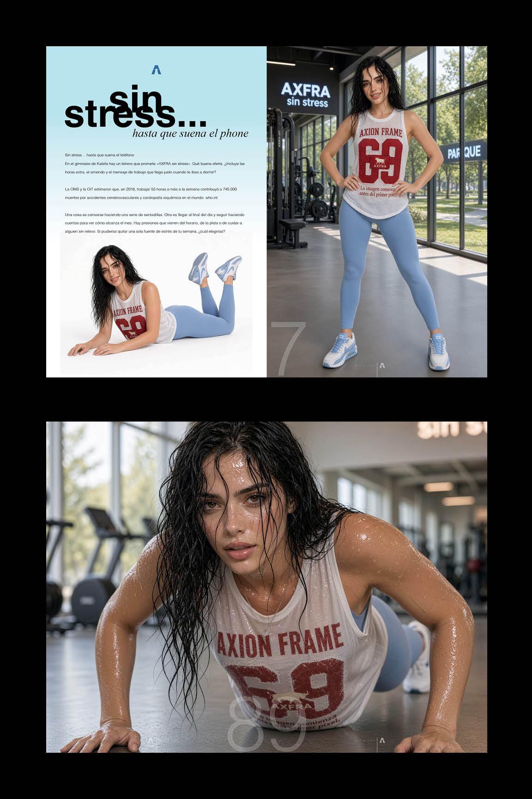
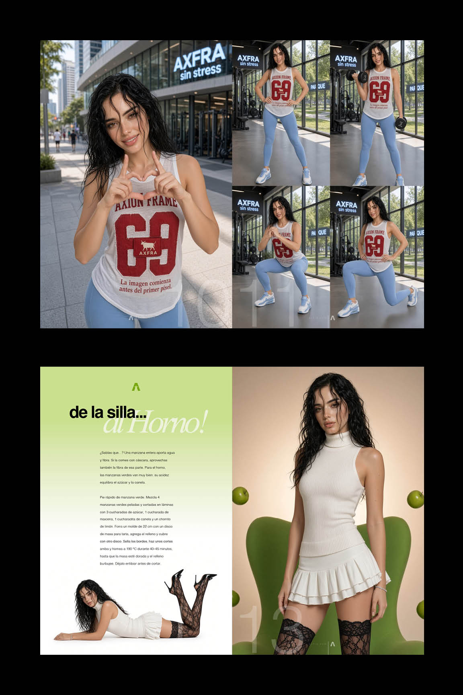
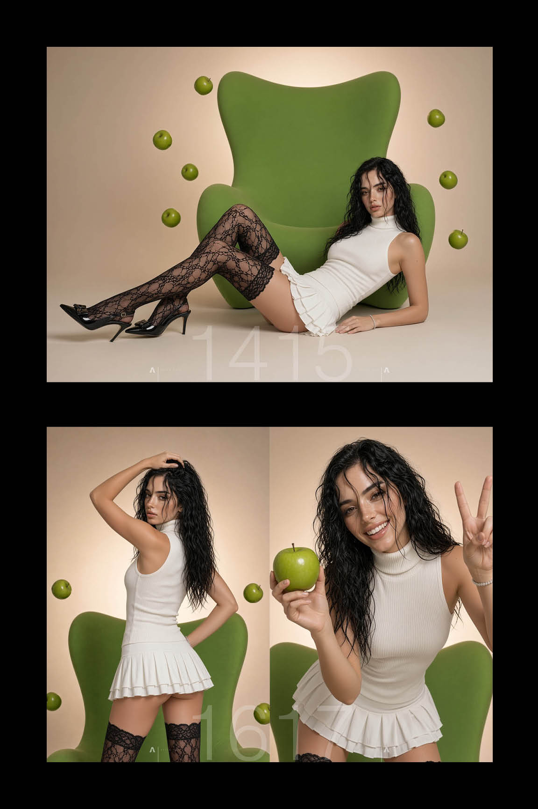
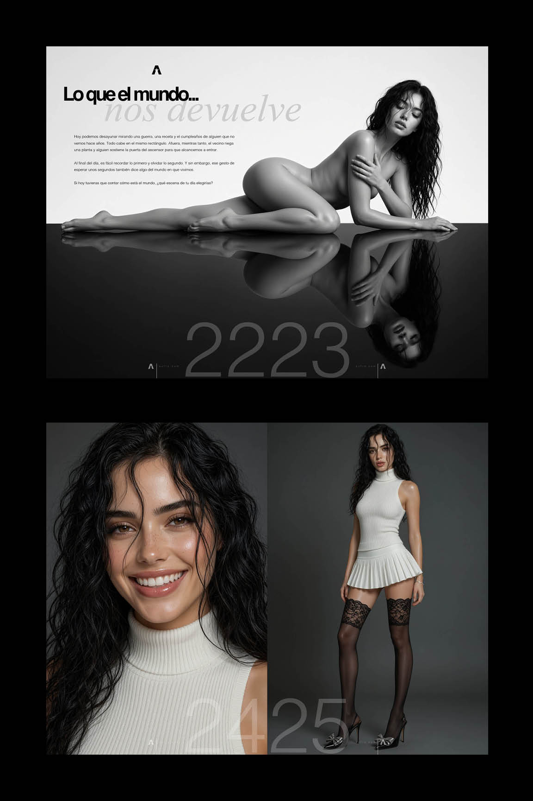
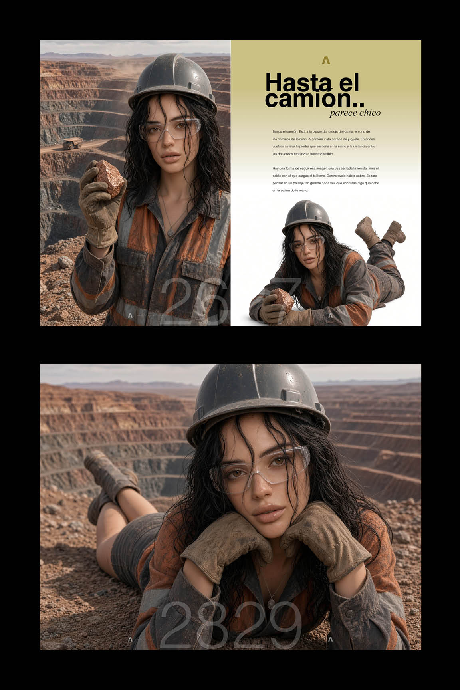
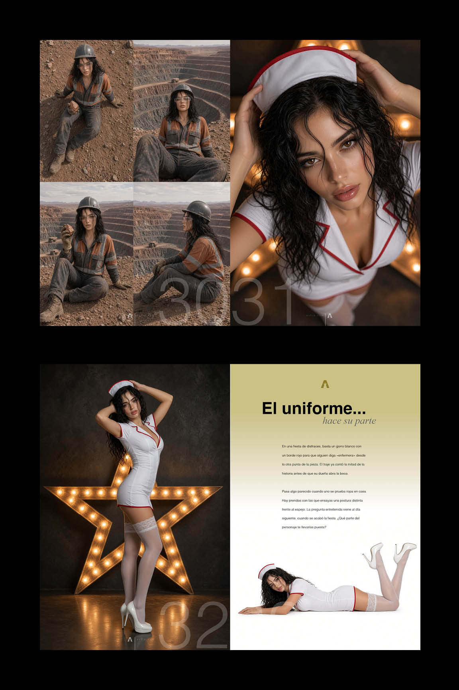
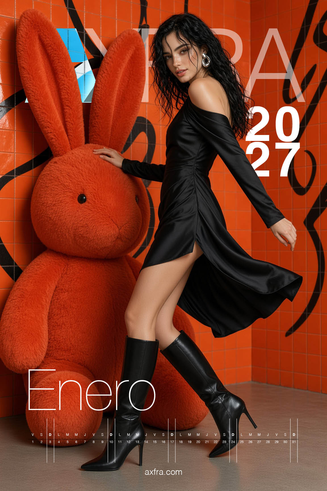
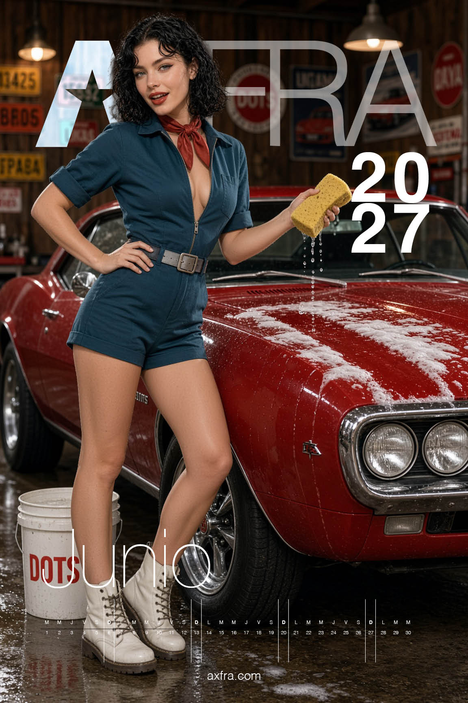
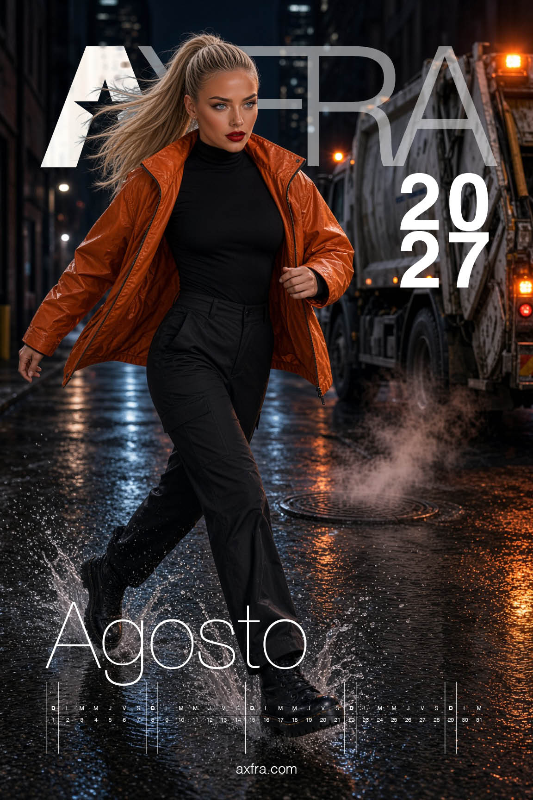
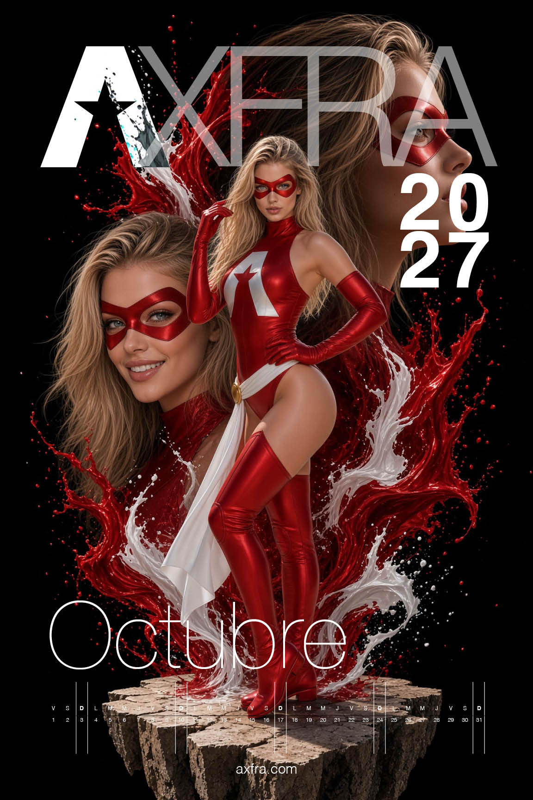

AXFRA MAGAZINE · N.º 01
AXFRA MAGAZINE
Katefa
Del estudio a la pista
Revista digital de moda y cultura visual creada con inteligencia artificial bajo la dirección editorial de ALARSI. Katefa abre la colección con un número de 42 páginas que reúne fotografía editorial, personajes de AXFRA, escenas de Chile en oficio y notas sobre la vida cotidiana.
Edición digital · 42 páginas · PDF en alta resolución
La propuesta lleva el sistema de composición visual AXFRA a una publicación editorial: identidad, vestuario, ambientes e iluminación se combinan para construir series visuales con una dirección común.
Dentro de Katefa: moda, oficio y cultura visual
Explora diez láminas de muestra del primer número: retratos y moda de estudio, entrenamiento, minería, música, pasarela y piscina. Abre cada imagen para verla ampliada; la edición digital de pago reúne las 42 páginas en PDF.
















AXFRA MAGAZINE · ESPECIAL GRATUITO
Calendario AXFRA 2027 · PDF gratuito
Calendario digital gratuito de 2027 en PDF, con una portada y doce láminas mensuales. La selección recorre moda, música, escenas urbanas, fantasía y estética cibernética creadas con IA. Puedes explorar los doce meses antes de descargarlo desde Payhip.













Colección de portadas AXFRA Magazine
Nueve portadas presentan la colección visual de AXFRA Magazine, cada una con una identidad, una paleta y un motivo propio. Katefa es la edición digital disponible en esta página; las otras portadas anticipan la colección y no implican que sus números completos estén publicados.


Ver en Motion · Crimson Ribbon Bloom

Ver en Motion · Pearl Green Ribbon Bloom
AXFRA · DIRECCIÓN CREATIVA
De la composición visual a la publicación editorial
AXFRA Magazine es una aplicación del sistema de composición visual AXFRA. Identidades digitales, vestuario, poses, iluminación, cámara y ambientes se combinan mediante módulos JSON reutilizables para desarrollar fotografía editorial, campañas publicitarias y secuencias audiovisuales con una dirección visual coherente.
La producción editorial explora la moda y la cultura visual desde Chile, incluyendo escenas de oficios y entornos cotidianos. Las imágenes son creaciones con inteligencia artificial bajo la dirección de ALARSI, no registros documentales de personas o lugares.
Publicidad y campañas visuales en AXFRA Magazine
Creamos campañas visuales para productos y marcas, pensadas para las páginas de AXFRA Magazine: dirección de arte, fotografía editorial con IA y composiciones adaptadas a la identidad de cada proyecto.
Publicidad y colaboracionesDirección editorial y creación visual: ALARSI · AXFRA.